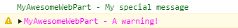

@pnp/logging¶

The logging module provides light weight subscribable and extensible logging framework which is used internally and available for use in your projects. This article outlines how to setup logging and use the various loggers.
Getting Started¶
Install the logging module, it has no other dependencies
npm install @pnp/logging --save
Understanding the Logging Framework¶
The logging framework is centered on the Logger class to which any number of listeners can be subscribed. Each of these listeners will receive each of the messages logged. Each listener must implement the ILogListener interface, shown below. There is only one method to implement and it takes an instance of the LogEntry interface as a parameter.
/**
* Interface that defines a log listener
*
*/
export interface ILogListener {
/**
* Any associated data that a given logging listener may choose to log or ignore
*
* @param entry The information to be logged
*/
log(entry: ILogEntry): void;
}
/**
* Interface that defines a log entry
*
*/
export interface ILogEntry {
/**
* The main message to be logged
*/
message: string;
/**
* The level of information this message represents
*/
level: LogLevel;
/**
* Any associated data that a given logging listener may choose to log or ignore
*/
data?: any;
}
Log Levels¶
export const enum LogLevel {
Verbose = 0,
Info = 1,
Warning = 2,
Error = 3,
Off = 99,
}
Writing to the Logger¶
To write information to a logger you can use either write, writeJSON, or log.
import {
Logger,
LogLevel
} from "@pnp/logging";
// write logs a simple string as the message value of the LogEntry
Logger.write("This is logging a simple string");
// optionally passing a level, default level is Verbose
Logger.write("This is logging a simple string", LogLevel.Error);
// this will convert the object to a string using JSON.stringify and set the message with the result
Logger.writeJSON({ name: "value", name2: "value2"});
// optionally passing a level, default level is Verbose
Logger.writeJSON({ name: "value", name2: "value2"}, LogLevel.Warning);
// specify the entire LogEntry interface using log
Logger.log({
data: { name: "value", name2: "value2"},
level: LogLevel.Warning,
message: "This is my message"
});
Log an error¶
There exists a shortcut method to log an error to the Logger. This will log an entry to the subscribed loggers where the data property will be the Error instance passed in, the level will be 'Error', and the message will be the Error instance's message property.
const e = Error("An Error");
Logger.error(e);
Subscribing a Listener¶
By default no listeners are subscribed, so if you would like to get logging information you need to subscribe at least one listener. This is done as shown below by importing the Logger and your listener(s) of choice. Here we are using the provided ConsoleListener. We are also setting the active log level, which controls the level of logging that will be output. Be aware that Verbose produces a substantial amount of data about each request.
import {
Logger,
ConsoleListener,
LogLevel
} from "@pnp/logging";
// subscribe a listener
Logger.subscribe(ConsoleListener());
// set the active log level
Logger.activeLogLevel = LogLevel.Info;
Available Listeners¶
There are two listeners included in the library, ConsoleListener and FunctionListener.
ConsoleListener¶
This listener outputs information to the console and works in Node as well as within browsers. It can be used without settings and writes to the appropriate console method based on message level. For example a LogEntry with level Warning will be written to console.warn. Basic usage is shown in the example above.
Configuration Options¶
Although ConsoleListener can be used without configuration, there are some additional options available to you. ConsoleListener supports adding a prefix to every output (helpful for filtering console messages) and specifying text color for messages (including by LogLevel).
Using a Prefix¶
To add a prefix to all output, supply a string in the constructor:
import {
Logger,
ConsoleListener,
LogLevel
} from "@pnp/logging";
const LOG_SOURCE: string = 'MyAwesomeWebPart';
Logger.subscribe(ConsoleListener(LOG_SOURCE));
Logger.activeLogLevel = LogLevel.Info;
With the above configuration, Logger.write("My special message"); will be output to the console as:
MyAwesomeWebPart - My special message
Customizing Text Color¶
You can also specify text color for your messages by supplying an IConsoleListenerColors object. You can simply specify color to set the default color for all logging levels or you can set one or more logging level specific text colors (if you only want to set color for a specific logging level(s), leave color out and all other log levels will use the default color).
Colors can be specified the same way color values are specified in CSS (named colors, hex values, rgb, rgba, hsl, hsla, etc.):
import {
Logger,
ConsoleListener,
LogLevel
} from "@pnp/logging";
const LOG_SOURCE: string = 'MyAwesomeWebPart';
Logger.subscribe(ConsoleListener(LOG_SOURCE, {color:'#0b6a0b',warningColor:'magenta'}));
Logger.activeLogLevel = LogLevel.Info;
With the above configuration:
Logger.write("My special message");
Logger.write("A warning!", LogLevel.Warning);
Will result in messages that look like this:

Color options:
color: Default text color for all logging levels unless they're specifiedverboseColor: Text color to use for messages with LogLevel.VerboseinfoColor: Text color to use for messages with LogLevel.InfowarningColor: Text color to use for messages with LogLevel.WarningerrorColor: Text color to use for messages with LogLevel.Error
To set colors without a prefix, specify either undefined or an empty string for the first parameter:
Logger.subscribe(ConsoleListener(undefined, {color:'purple'}));
FunctionListener¶
The FunctionListener allows you to wrap any functionality by creating a function that takes a LogEntry as its single argument. This produces the same result as implementing the LogListener interface, but is useful if you already have a logging method or framework to which you want to pass the messages.
import {
Logger,
FunctionListener,
ILogEntry
} from "@pnp/logging";
let listener = new FunctionListener((entry: ILogEntry) => {
// pass all logging data to an existing framework
MyExistingCompanyLoggingFramework.log(entry.message);
});
Logger.subscribe(listener);
Create a Custom Listener¶
If desirable for your project you can create a custom listener to perform any logging action you would like. This is done by implementing the ILogListener interface.
import {
Logger,
ILogListener,
ILogEntry
} from "@pnp/logging";
class MyListener implements ILogListener {
log(entry: ILogEntry): void {
// here you would do something with the entry
}
}
Logger.subscribe(new MyListener());
Logging Behavior¶
To allow seamless logging with v3 we have introduced the PnPLogging behavior. It takes a single augument representing the log level of that behavior, allowing you to be very selective in what logging you want to get. As well the log level applied here ignores any global level set with activeLogLevel on Logger.
import { LogLevel, PnPLogging, Logger, ConsoleListener } from "@pnp/logging";
import { spfi, SPFx } from "@pnp/sp";
import "@pnp/sp/webs";
import "@pnp/sp/lists";
// subscribe a listener
Logger.subscribe(ConsoleListener());
// at the root we only want to log errors, which will be sent to all subscribed loggers on Logger
const sp = spfi().using(SPFx(this.context), PnPLogging(LogLevel.Error));
const list = sp.web.lists.getByTitle("My List");
// use verbose logging with this particular list because you are trying to debug something
list.using(PnPLogging(LogLevel.Verbose));
const listData = await list();